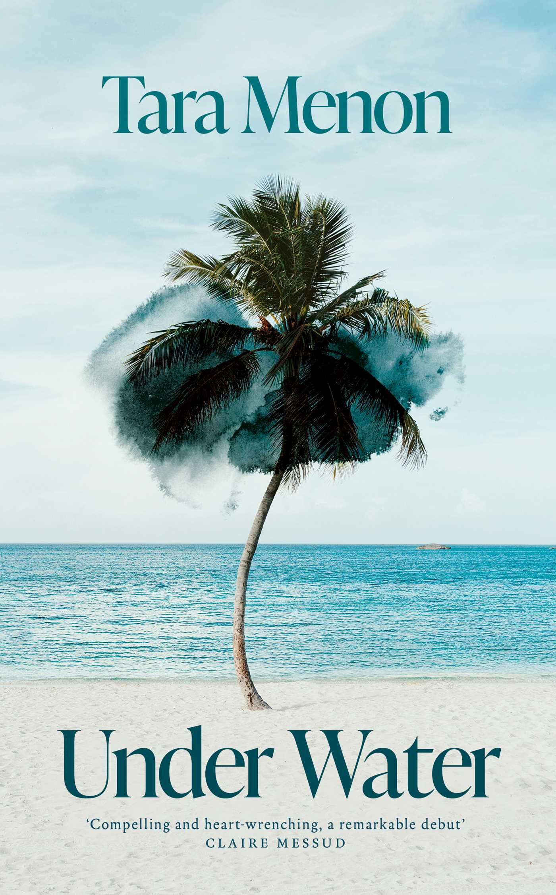

The Best Debut Novels of 2026 So Far
Most year-end debut roundups arrive too late and too soft. The point of a mid-year debut list is to flag the writers who deserve attention now, before the literary algorithm decides for you. Five debuts so far in 2026 are doing something on the page worth a working writer’s attention.

They aren’t all the most-publicised. Some are arriving with six-figure advances and translation rights in thirty languages. Others are slipping out from smaller presses with the quieter confidence of writers who’ve waited years to be ready. What they share is a sentence-level seriousness that’s rare in any debut year.
I’ll add to this list as the year goes on. For now, these are the five.
Under Water by Tara Menon
The most loudly announced debut of early 2026. A six-figure advance from Knopf. Translation rights sold to thirty languages before publication. Endorsements from Katie Kitamura and Namwali Serpell, two writers whose blurbs mean something. Menon teaches literature at Harvard, which on a debut bio is usually a warning sign of academic prose, but the early reads suggest the opposite.
The novel moves between the 2004 Boxing Day tsunami in Thailand and the landfall of Hurricane Sandy in New York in 2012. Two disasters, eight years apart, and the same character carrying the weight of both. Survivor’s guilt as the structural spine. The publisher comparisons being floated are to Yiyun Li and Garth Greenwell, which are interesting comparisons because both writers work in a register that prizes restraint over event.
What’s promising about Under Water on the available evidence is that Menon hasn’t tried to write the disaster novel that contemporary publishing seems to want. The disasters are framing devices. The book’s centre is the interior life of a survivor decades after the event. That’s a harder novel to write and a more durable one to read.
For working writers, the lesson is in the architecture. Menon’s structural choice — two disasters as bookends, with the actual life happening in between — gives her a reason to pace slowly without the reader losing patience. The reader knows where the book is going. That permission to sit with character is what most debut novels can’t earn. I’ve written about Under Water at length in a full review here.
Available through Bookshop.org UK.
Half His Age by Jennette McCurdy
McCurdy is the second-act story of the literary year. Her 2022 memoir I’m Glad My Mom Died sold over a million copies and made her one of the few celebrity authors taken seriously by serious readers. Half His Age is the fiction follow-up, and the question hanging over it is whether she can make the move from memoir to novel without losing what made the memoir work.
The early signs are she can. The novel’s premise involves sex, consumerism, class, desire, loneliness, the internet, rage, and intimacy — on paper a recipe for the kind of overstuffed Big Contemporary Novel that drowns under its own ambition. McCurdy has the temperament to keep the focus narrow. The memoir’s discipline — one voice, one consciousness, no comfort — is what made it land. If the novel inherits that discipline rather than expanding into something more conventional, it’ll be the rare celebrity-author debut that earns the literary attention rather than borrowing it.
What I’d watch for in Half His Age is whether McCurdy trusts the reader to sit with discomfort. The memoir trusted that completely. Novels by writers crossing over from memoir often start to over-explain in a way the memoir form wouldn’t have permitted. If McCurdy holds her nerve, this becomes one of the most interesting debuts of the year.
Available through Bookshop.org UK.
Lost Lambs by Madeline Cash
Cash is one of those writers who arrives with a small but vivid following from the literary magazine ecosystem. Her short fiction has appeared in The Paris Review, Joyland, and Forever Magazine. Lost Lambs is her first novel and the early coverage places her inside the loose constellation of post-internet literary writers — Honor Levy, Walker Caplan, Halle Butler — who write about contemporary American life with a flat affect that conceals a lot of moral weight.
The novel follows a recently laid-off journalist who falls from a glossy magazine job to the clickbait mines of a tabloid. The premise sounds satirical and probably is in places, but Cash’s short fiction has always done the trick of making satire feel like documentary. The comparison points worth holding in mind are Halle Butler’s The New Me and Patricia Lockwood’s No One Is Talking About This: both books make late-capitalist absurdity feel painful rather than funny, which is the harder register and the more rewarding one.
For writers, what’s instructive about Cash is the discipline of her sentences. She trims hard. The short fiction reads like Lydia Davis if Lydia Davis had grown up on the internet. If Lost Lambs sustains that compression at novel length, it’ll be a real piece of work. The risk is that the discipline of compression breaks down across three hundred pages, which is what happens to most short-fiction writers when they make the move. Worth watching to see whether Cash beats the curve.
Available through Bookshop.org UK.
Good People by Sharifa Williams
A debut from the most ambitious end of the literary spectrum. Williams’s novel uses a kaleidoscope of perspectives to tell the story of Zorah Sharaf, a young woman whose alleged transgression has fractured her family and her community. The narrative moves between voices, each one reframing what happened, until the reader has to do the moral work themselves.
This is a structural risk. Multi-voice novels are difficult to pull off because the reader needs each voice to be distinct enough to feel real and similar enough to feel like part of the same world. Most multi-voice debuts collapse into a soup of indistinguishable narrators. Williams, on the available evidence, has avoided that. The voices read as people, not as functions.
What makes the novel ambitious in the right way is the refusal of resolution. Williams isn’t writing a whodunit. She’s writing a what-actually-happened-and-can-we-ever-know. The reader leaves the book without a settled verdict, which is the harder ending and the truer one. For a debut to attempt that level of moral ambiguity and pull it off is unusual. The multi-voice novel works only when each voice has a distinct vocabulary. Williams reportedly does this through register rather than dialect, which is the more difficult route and the one that ages better.
Available through Bookshop.org UK.
Permanence by Sophie Mackintosh
Technically Mackintosh’s third novel, but her first published in the United States with major distribution — and enough marketing weight that for the American literary readership she’s effectively a debut. Worth including because Permanence is operating in a register that almost no other novel of 2026 is going near.
A pair of clandestine lovers, Clara and Francis, wake up in an apartment they don’t recognise, with no memory of how they got there. They’ve been transported to an unnamed sanctuary city where adulterous couples can live openly. A paradise, except for everything that paradise rules out.
Mackintosh’s previous work — The Water Cure, Blue Ticket — established her as one of the most distinctive prose stylists of her generation. Her sentences move like translated work even though they’re written in English. They have the spaciousness and slight off-rhythm of prose that’s been moved across a language. The effect on the page is dreamlike without ever tipping into the precious or the obscure.
Permanence takes the speculative premise and uses it as a pressure cooker for very ordinary human questions: what does fidelity mean when its constraints disappear, what does desire become when it has nowhere to hide, what’s left of a relationship when the secrecy that sustained it is taken away. These are questions a realist novel could ask but couldn’t answer with the same clarity. The speculative frame gives Mackintosh the licence to dramatise them. This is the case study in how to use a genre element in service of a literary preoccupation. The science-fictional premise isn’t decoration. It’s a tool for forcing the characters into a position the realist mode couldn’t engineer.
Available through Bookshop.org UK.
The five debuts above don’t share a subject matter, a setting, or a register. What they share is a willingness to write at sentence level instead of at concept level. Each could be summarised in a sentence, but none of them would survive being written for the summary. The sentences are doing the work that the premise can’t. Most contemporary debut publishing is the opposite — premise-driven debuts dominate the marketing layer of literary fiction in a way they didn’t fifteen years ago. The books on this list are pushing back against that, quietly. They’re trusting the reader to follow them at the level of the line. Whether that trust pays off commercially is a different question. The books that get read and reread in 2036 will be the ones that did the sentence-level work. These five are betting on the second category. Worth reading them now to see who’s right.
I’ll update this list as the year goes on. The next round of significant literary debuts arrives in autumn with the second-half publishing cycle.
For more on what literary fiction is doing in 2026, read my piece on the wider landscape. For more on the craft principles that make debut novels work or fail, see Minimalist Fiction: The Techniques That Actually Work.
All the books linked in this piece are available through my Bookshop.org UK affiliate shop. Purchases support independent bookshops and contribute a small commission to Tumbleweed Words at no extra cost.
If this was useful, buy me a coffee.
Flash fiction and prose poetry in the tradition of what you just read. Written on the road. Over 1,200 readers. Free.
Read and subscribe →